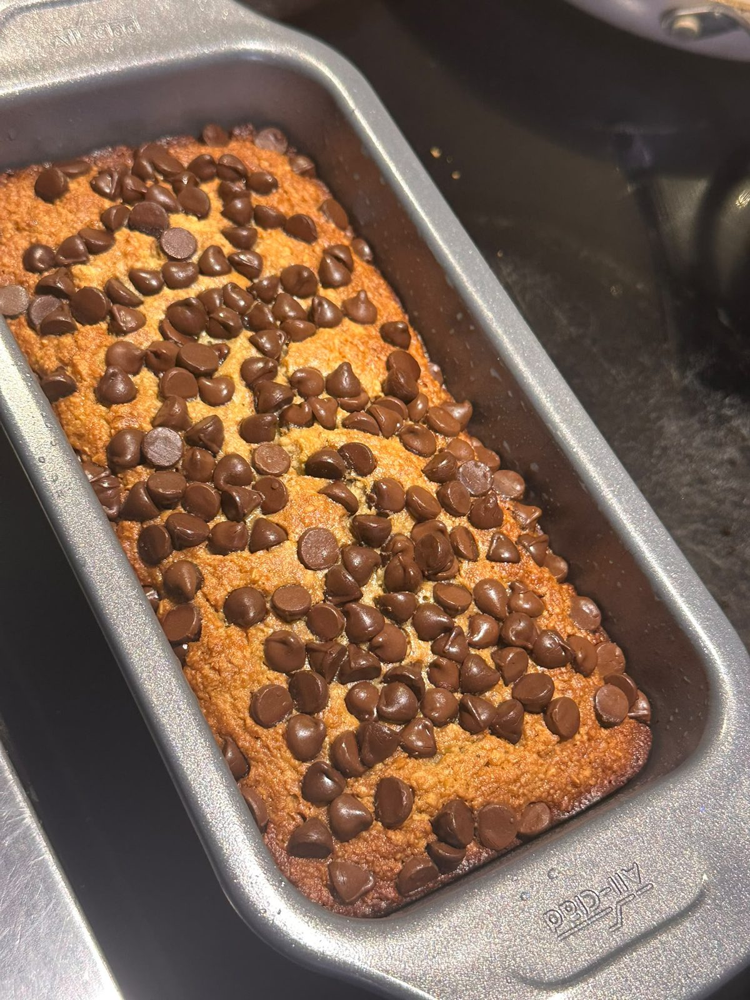
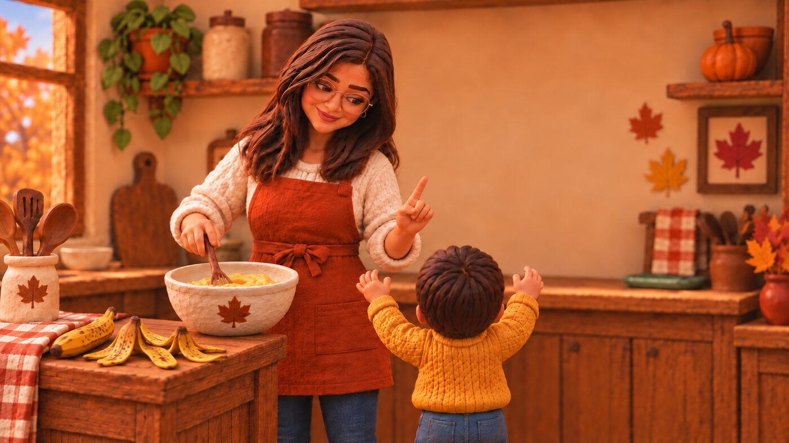
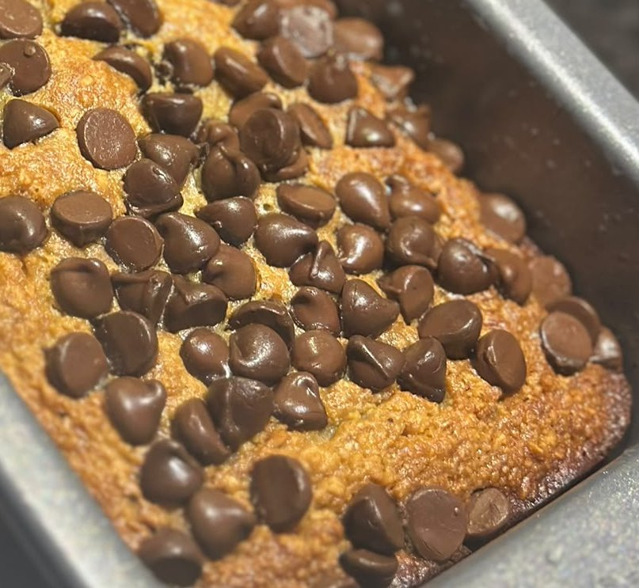
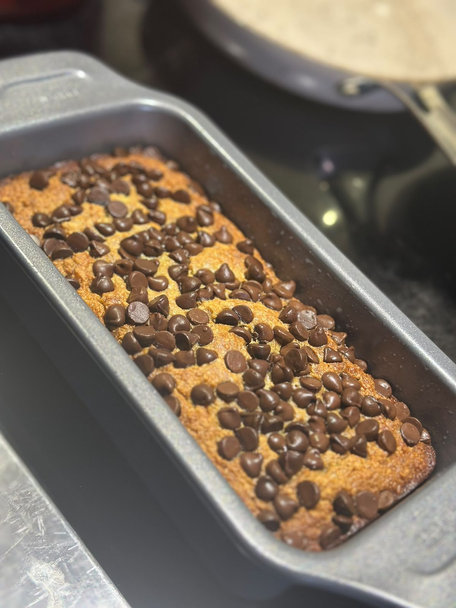
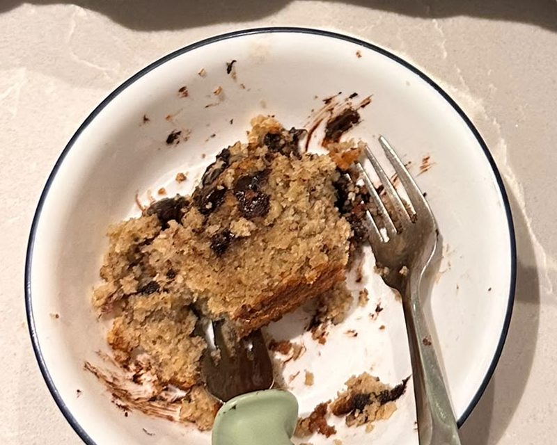

Banana Maple Chocolate Chip Protein Bread
For the 4 o'clock slump
Oat, almond and coconut flour, greek yogurt and eggs, sweetened with maple. Gluten-free, no butter, no refined sugar, 9 g protein a slice.
Bakes 55 to 65 minutes. Makes 1 loaf. 9 x 4.5 in loaf pan.

- minutes in the oven
- 55–65
- loaf
- 1
- inch loaf pan
- 9 × 4.5
3 ripe bananas and a few pantry staples.
2 bowls, 1 pan,
~ 1 hr in the oven.



The recipe
Instructions
Heat the oven to 350°F (175°C).
Grease or line a 9 × 4.5 in loaf pan.
In a big bowl, mash the bananas. Add the maple syrup, olive oil, eggs, vanilla, yogurt, milk and applesauce. Whisk well.
In another bowl, mix the oat flour, almond flour, coconut powder, protein powder, baking soda and salt.
Pour the dry mix into the wet mix. Stir gently until just mixed.
Stir in the chocolate chips or walnuts, if using.
Pour the batter into the pan. Smooth the top.
Bake for 55 to 65 minutes. The top should be golden. A toothpick in the middle should come out mostly clean.
If the top gets dark too fast, cover it loosely with foil for the last 10 to 15 minutes.
Cool in the pan for 10 minutes. Move it to a rack. Cool it all the way before you slice. This helps it hold together.
Cover with foil if the top browns too fast. Cool all the way before slicing.

Nutrition
Per slice, if you cut the loaf into 10. This is an estimate. It uses 3 bananas, ⅓ cup chocolate chips, and a protein powder with 25 g protein and 120 calories per scoop. Your numbers will differ.
Want more protein?
The recipe above stays exactly as written. This only shows what a slice would look like if you swapped or added. Pick, and the numbers follow.
As written on the page.
- g protein a slice
- 9.0
- calories a slice
- 272
- g protein per 100 kcal
- 3.4
Good to know
A warm slice in one hand, coffee in the other, and the toddler finally busy with the pots cupboard. That is the whole plan for the morning.
Hi, my name is Aditi. 👋
I'm a toddler boy mom for love 💕,
a software/technical/emotional support engineer for work 👩🏻💻,
and a strength trainer for mind 🏋🏻♂️🧘🏻♀️.
I cook simple food that works for real life.
Say hi on Instagram @mi_aditi